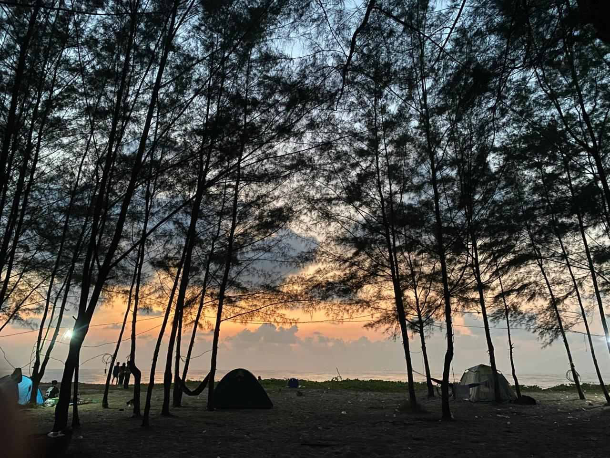
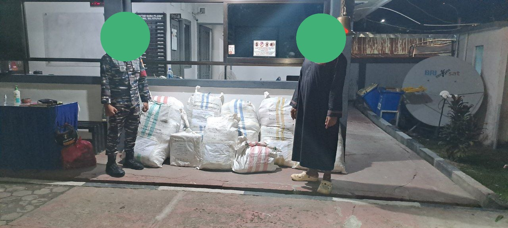

Informasi dan kegiatan terbaru Rumah Tahfizhul Quran Al Imam Adz Dzahabiy.

Kegiatan class meeting santri syabaab sebagai sarana kebersamaan, penyegaran, dan pengembangan potensi.
Persiapan Musabaqah Al-Qur'an Al-Imam Asy-Syathiby ke-2 Se-Borneo. Mari ikut berpartisipasi untuk menyukseskan kegiatan ini. Musabaqah ini membuka kategori Golongan dan Maqra 5 Juz serta 10 Juz.

Alhamdulillah, telah selesai disalurkan donasi untuk membantu saudara-saudara kita yang terdampak bencana di Sumatra Utara dan Aceh. Total dana yang terkumpul sebesar Rp42.482.515 dan pakaian sebanyak 17 kodi.